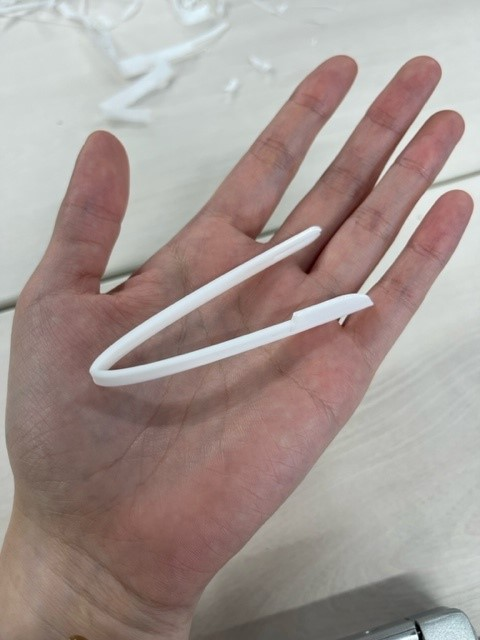
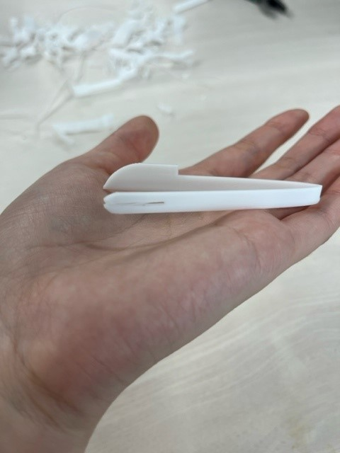
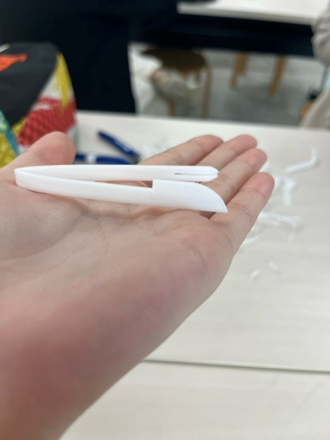
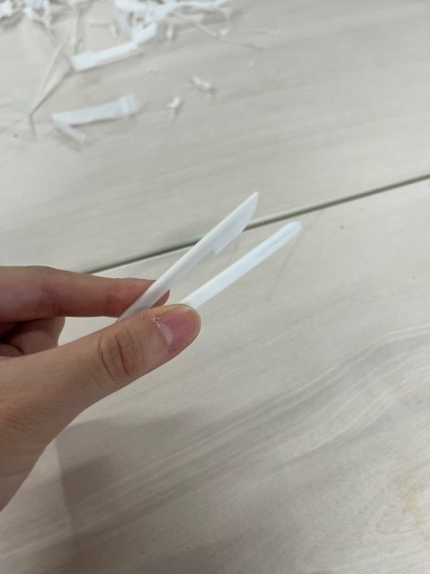
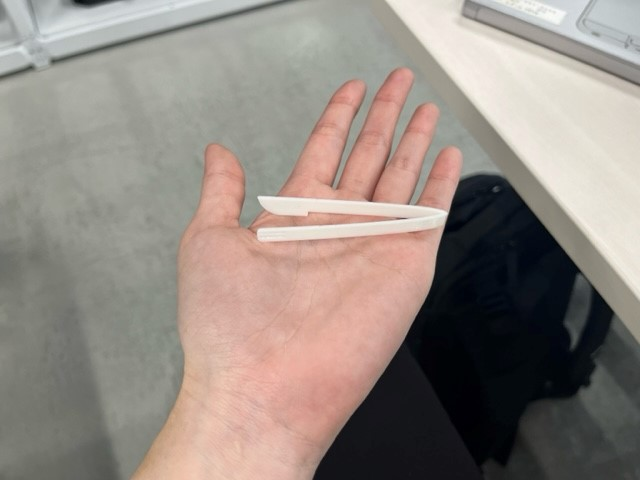
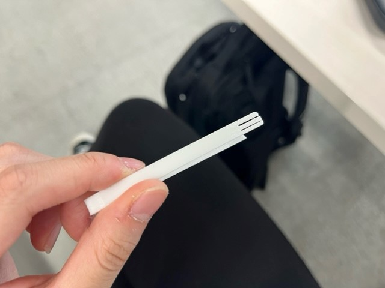

作品名：カトラリーピック
発想にいたるまでのストーリー


アイデアの発散Workをしたとき(2023.09.29)、
グミなどのお菓子をつかむ用のピンセットがあったら
手が汚れないしいいんじゃないかなと思ってふせんを作りました。
しかしそれだけではつまらないので、
ピンセットの先っちょのほうをナイフとフォークみたいにしたらかわいいかなと考えて、
このスケッチを描いてみました。
最初のプリント

これは3Dプリンターを使って印刷した記念すべき第1作目のピンセットです。6分ほどかかりました。
反省点はサイズが少し小さすぎること、厚みが足りずすぐ折れそうなことでした。
良い点はピンセットとして作用することです。きちんと物がつかめるようにしなってくれました。
この時はまだナイフとフォークの部分は作らず（というか作れず）、3Dプリンターの操作方法を知る目的でプリントしました。
2回目のプリント
  なんとかイメージに技術が追いついてきて、ナイフとフォークを無事デザイン。こちらは9分かかりました。
大きさは私の理想の大きさになりました！前回同様、しなるので物をつかむことも可能です。
しかし！！
とんでもない失敗をしていたことにここで気づきます…
実際に掴んでみるとよくわかると思います。何かがおかしいと思いませんか…？
そう、何を隠そうこのピンセットは、
ナイフとフォークの位置が逆になっているのです T^T
プリントしてみて初めて気づいたことでした。
「あれ、そういえばナイフって右手で持つよな？」と思ってしまってはもう遅い…
「左利き用だし！！」と言いたいところですが、自分の中で違和感がぬぐえないためすぐさま修正を施します。
3回目のプリント
 ナイフとフォークの位置は修正し、フォークはミツマタにしてみました。サイズも若干小さく調整しています。
全体を通して学んだこと
2回目のプリントで、ナイフとフォークの位置が逆なことに気づいたことが印象的でした。 実際にやってみないと分からないことはあると以前から信じていましたが、このような初歩的ミスにもモデリングの時点で気づかなかったのは驚きでした。 やはり実際に作ってみることは自分の想像以上に大切だということが身をもって理解できました。 今回の課題は、友人の協力がなかったら成し遂げられませんでした。心から感謝しています。